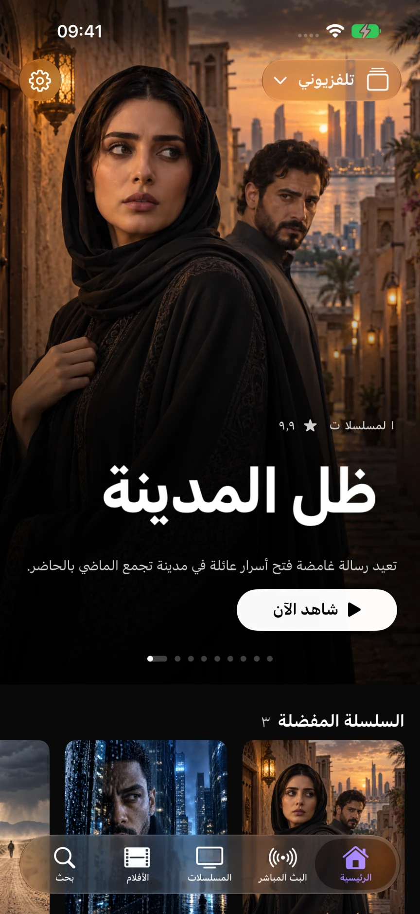
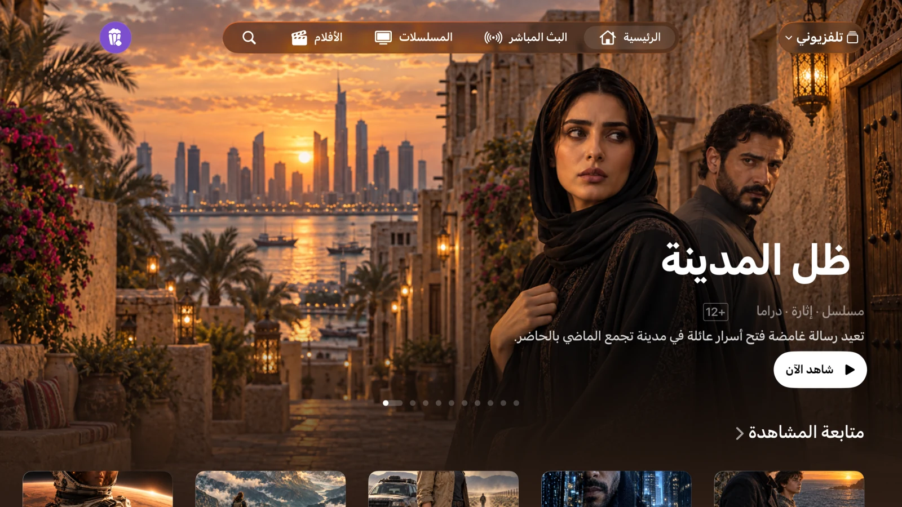

قوائم M3U وXtream
أضف رابط M3U/M3U8 أو بيانات اتصال Xtream. تنقّل بين القوائم وحافظ على استقلالية كل كتالوج ومفضلة وسجل مشاهدة. يمكنك أيضاً استيراد ملفات M3U على أجهزة iPhone وiPad.
أضف قائمة M3U أو اتصال Xtream لتشغيل القنوات والأفلام والمسلسلات. مجاني، دون إعلانات من Astra.
استخدم قائمة التشغيل الخاصة بك. تطبيق Astra غير متوفر بعد على App Store. أنت تقرر ما إذا كنت سترسل البريد الإلكتروني لطلب إشعار الإطلاق.

أضف رابط M3U/M3U8 أو بيانات اتصال Xtream. تنقّل بين القوائم وحافظ على استقلالية كل كتالوج ومفضلة وسجل مشاهدة. يمكنك أيضاً استيراد ملفات M3U على أجهزة iPhone وiPad.
تصفّح القنوات، واطلع على ما يُعرض حالياً، وراجع دليل البرامج (XMLTV). احتفظ بقنواتك المفضلة قريبة منك.
استكشف الأفلام والمسلسلات، واختر حلقة لمتابعتها من حيث توقفت. تتوفر خيارات الصوت والترجمة المصاحبة (subtitles) إذا كان المصدر يوفرها.
علامات تبويب على iPhone، وشريط جانبي على iPad، وعناصر تحكم مصممة خصيصاً لجهاز التحكم عن بُعد الخاص بـ Apple TV. يمكن مزامنة القوائم المتوافقة والمفضلة وسجل المشاهدة عبر حساب iCloud الخاص بك.

تستخدم ميزتا AirPlay و"صورة داخل صورة" (Picture in Picture) مشغل النظام الأصلي عند دعم النظام والتنسيق لهما. لا يتم نقل الملفات المستوردة محلياً كملفات قابلة للتشغيل إلى Apple TV.
يجري حالياً الإعداد للإطلاق العام للتطبيق على iPhone وiPad وApple TV. تطبيق Astra غير متوفر حالياً في متجر التطبيقات (App Store)، ولكن يمكنك طلب إشعار عند الإطلاق عبر البريد الإلكتروني.
لا. لا يبيع تطبيق Astra ولا يوفر قنوات أو أفلاماً أو مسلسلات أو قوائم تشغيل أو اشتراكات تلفزيونية. عليك استخدام مصدر تملك صلاحية استخدامه.
تظل مكتبتك على جهازك. يمكن مزامنة البيانات المتوافقة عبر قاعدة بيانات iCloud الخاصة بك. أما إحصائيات الاستخدام وتقارير الأعطال فهي اختيارية، وتكون معطلة افتراضياً، ويمكن التحكم فيها بشكل منفصل من خلال الإعدادات.
لا يستخدم هذا الموقع أدوات التحليل أو الإعلانات أو النماذج أو ملفات تعريف الارتباط (cookies) الخاصة به. تتم استضافة الموقع عبر GitHub Pages، وقد يتم تسجيل معلومات تقنية عن الزيارة وفقاً لسياسة الخصوصية الخاصة بهم.
تم التطوير بواسطة Juan Cazalla Estrella.